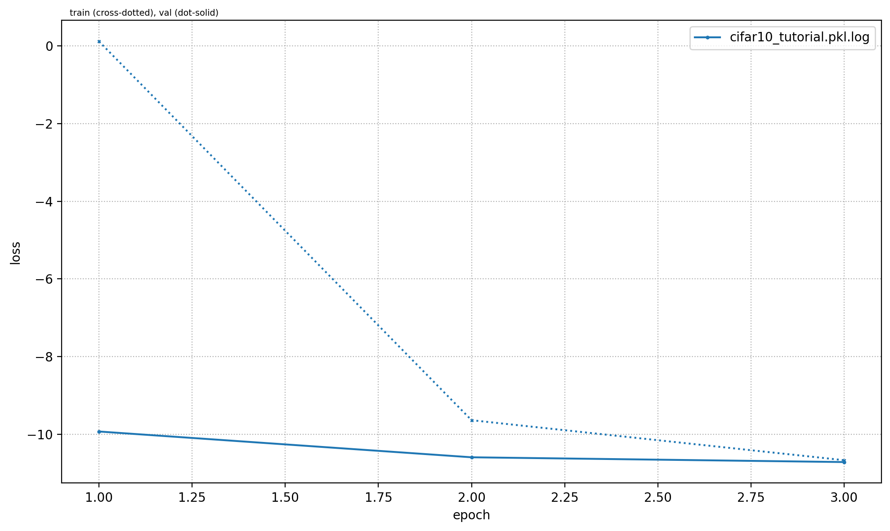
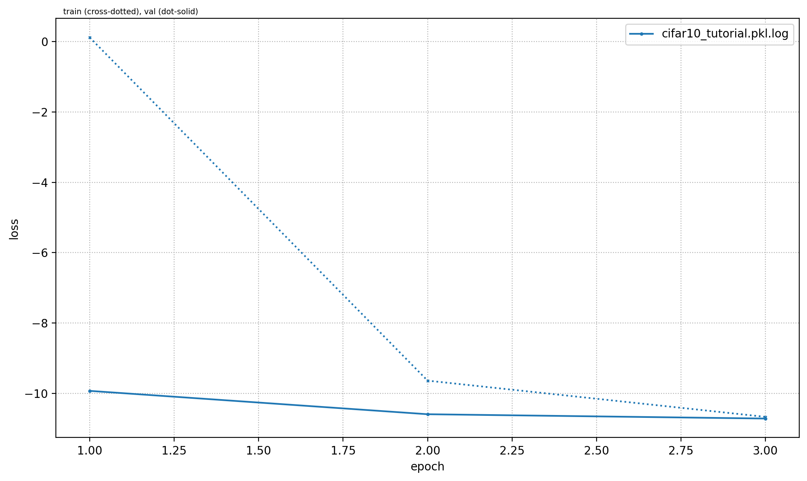
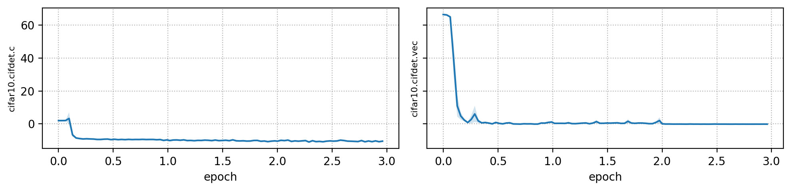
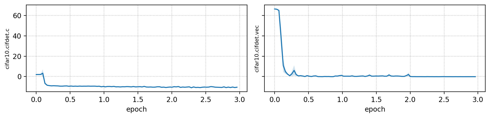

Cifar10
On this page
Cifar10#
This page gives a quick introduction to OpenPifPaf’s Cifar10 plugin that is part of openpifpaf.plugins.
It demonstrates the plugin architecture.
There already is a nice dataset for CIFAR10 in torchvision and a related PyTorch tutorial.
The plugin adds a DataModule that uses this dataset.
Let’s start with them setup for this notebook and registering all available OpenPifPaf plugins:
print(openpifpaf.plugin.REGISTERED.keys())
dict_keys(['openpifpaf.plugins.animalpose', 'openpifpaf.plugins.apollocar3d', 'openpifpaf.plugins.cifar10', 'openpifpaf.plugins.coco', 'openpifpaf.plugins.crowdpose', 'openpifpaf.plugins.nuscenes', 'openpifpaf.plugins.posetrack', 'openpifpaf.plugins.wholebody', 'openpifpaf_extras'])
Next, we configure and instantiate the Cifar10 datamodule and look at the configured head metas:
# configure
openpifpaf.plugins.cifar10.datamodule.Cifar10.debug = True
openpifpaf.plugins.cifar10.datamodule.Cifar10.batch_size = 1
# instantiate and inspect
datamodule = openpifpaf.plugins.cifar10.datamodule.Cifar10()
datamodule.set_loader_workers(0) # no multi-processing to see debug outputs in main thread
datamodule.head_metas
[CifDet(name='cifdet', dataset='cifar10', head_index=None, base_stride=None, upsample_stride=1, categories=('plane', 'car', 'bird', 'cat', 'deer', 'dog', 'frog', 'horse', 'ship', 'truck'), training_weights=None)]
We see here that CIFAR10 is being treated as a detection dataset (CifDet) and has 10 categories.
To create a network, we use the factory() function that takes the name of the base network cifar10net and the list of head metas.
net = openpifpaf.network.Factory(base_name='cifar10net').factory(head_metas=datamodule.head_metas)
We can inspect the training data that is returned from datamodule.train_loader():
# configure visualization
openpifpaf.visualizer.Base.set_all_indices(['cifdet:9:regression']) # category 9 = truck
# Create a wrapper for a data loader that iterates over a set of matplotlib axes.
# The only purpose is to set a different matplotlib axis before each call to
# retrieve the next image from the data_loader so that it produces multiple
# debug images in one canvas side-by-side.
def loop_over_axes(axes, data_loader):
previous_common_ax = openpifpaf.visualizer.Base.common_ax
train_loader_iter = iter(data_loader)
for ax in axes.reshape(-1):
openpifpaf.visualizer.Base.common_ax = ax
yield next(train_loader_iter, None)
openpifpaf.visualizer.Base.common_ax = previous_common_ax
# create a canvas and loop over the first few entries in the training data
with openpifpaf.show.canvas(ncols=6, nrows=3, figsize=(10, 5)) as axs:
for images, targets, meta in loop_over_axes(axs, datamodule.train_loader()):
pass

Training#
We train a very small network, cifar10net, for only one epoch. Afterwards, we will investigate its predictions.
%%bash
python -m openpifpaf.train \
--dataset=cifar10 --basenet=cifar10net --log-interval=50 \
--epochs=3 --lr=0.0003 --momentum=0.95 --batch-size=16 \
--lr-warm-up-epochs=0.1 --lr-decay 2.0 2.5 --lr-decay-epochs=0.1 \
--loader-workers=2 --output=cifar10_tutorial.pkl
INFO:__main__:neural network device: cpu (CUDA available: False, count: 0)
INFO:openpifpaf.network.basenetworks:cifar10net: stride = 16, output features = 128
INFO:openpifpaf.network.losses.multi_head:multihead loss: ['cifar10.cifdet.c', 'cifar10.cifdet.vec', 'cifar10.cifdet.scales'], [1.0, 1.0, 1.0]
INFO:openpifpaf.logger:{'type': 'process', 'argv': ['/opt/hostedtoolcache/Python/3.8.16/x64/lib/python3.8/site-packages/openpifpaf/train.py', '--dataset=cifar10', '--basenet=cifar10net', '--log-interval=50', '--epochs=3', '--lr=0.0003', '--momentum=0.95', '--batch-size=16', '--lr-warm-up-epochs=0.1', '--lr-decay', '2.0', '2.5', '--lr-decay-epochs=0.1', '--loader-workers=2', '--output=cifar10_tutorial.pkl'], 'args': {'output': 'cifar10_tutorial.pkl', 'disable_cuda': False, 'ddp': False, 'local_rank': None, 'sync_batchnorm': True, 'quiet': False, 'debug': False, 'log_stats': False, 'shufflenetv2_pretrained': True, 'xcit_out_channels': None, 'xcit_out_maxpool': False, 'xcit_pretrained': True, 'mobilenetv3_pretrained': True, 'swin_drop_path_rate': 0.2, 'swin_input_upsample': False, 'swin_use_fpn': False, 'swin_fpn_out_channels': None, 'swin_fpn_level': 3, 'swin_pretrained': True, 'shufflenetv2k_input_conv2_stride': 0, 'shufflenetv2k_input_conv2_outchannels': None, 'shufflenetv2k_stage4_dilation': 1, 'shufflenetv2k_kernel': 5, 'shufflenetv2k_conv5_as_stage': False, 'shufflenetv2k_instance_norm': False, 'shufflenetv2k_group_norm': False, 'shufflenetv2k_leaky_relu': False, 'mobilenetv2_pretrained': True, 'resnet_pretrained': True, 'resnet_pool0_stride': 0, 'resnet_input_conv_stride': 2, 'resnet_input_conv2_stride': 0, 'resnet_block5_dilation': 1, 'resnet_remove_last_block': False, 'cf4_dropout': 0.0, 'cf4_inplace_ops': True, 'checkpoint': None, 'basenet': 'cifar10net', 'cross_talk': 0.0, 'download_progress': True, 'head_consolidation': 'filter_and_extend', 'lambdas': None, 'component_lambdas': None, 'auto_tune_mtl': False, 'auto_tune_mtl_variance': False, 'task_sparsity_weight': 0.0, 'background_weight': 1.0, 'focal_alpha': 0.5, 'focal_gamma': 1.0, 'focal_detach': False, 'focal_clamp': True, 'bce_min': 0.0, 'bce_soft_clamp': 5.0, 'bce_background_clamp': -15.0, 'regression_soft_clamp': 5.0, 'r_smooth': 0.0, 'laplace_soft_clamp': 5.0, 'b_scale': 1.0, 'scale_log': False, 'scale_soft_clamp': 5.0, 'epochs': 3, 'train_batches': None, 'val_batches': None, 'clip_grad_norm': 0.0, 'clip_grad_value': 0.0, 'log_interval': 50, 'val_interval': 1, 'stride_apply': 1, 'fix_batch_norm': False, 'ema': 0.01, 'profile': None, 'cif_side_length': 4, 'caf_min_size': 3, 'caf_fixed_size': False, 'caf_aspect_ratio': 0.0, 'encoder_suppress_selfhidden': True, 'encoder_suppress_invisible': False, 'encoder_suppress_collision': False, 'momentum': 0.95, 'beta2': 0.999, 'adam_eps': 1e-06, 'nesterov': True, 'weight_decay': 0.0, 'adam': False, 'amsgrad': False, 'lr': 0.0003, 'lr_decay': [2.0, 2.5], 'lr_decay_factor': 0.1, 'lr_decay_epochs': 0.1, 'lr_warm_up_start_epoch': 0, 'lr_warm_up_epochs': 0.1, 'lr_warm_up_factor': 0.001, 'lr_warm_restarts': [], 'lr_warm_restart_duration': 0.5, 'dataset': 'cifar10', 'loader_workers': 2, 'batch_size': 16, 'dataset_weights': None, 'animal_train_annotations': 'data-animalpose/annotations/animal_keypoints_20_train.json', 'animal_val_annotations': 'data-animalpose/annotations/animal_keypoints_20_val.json', 'animal_train_image_dir': 'data-animalpose/images/train/', 'animal_val_image_dir': 'data-animalpose/images/val/', 'animal_square_edge': 513, 'animal_extended_scale': False, 'animal_orientation_invariant': 0.0, 'animal_blur': 0.0, 'animal_augmentation': True, 'animal_rescale_images': 1.0, 'animal_upsample': 1, 'animal_min_kp_anns': 1, 'animal_bmin': 1, 'animal_eval_test2017': False, 'animal_eval_testdev2017': False, 'animal_eval_annotation_filter': True, 'animal_eval_long_edge': 0, 'animal_eval_extended_scale': False, 'animal_eval_orientation_invariant': 0.0, 'apollo_train_annotations': 'data-apollocar3d/annotations/apollo_keypoints_66_train.json', 'apollo_val_annotations': 'data-apollocar3d/annotations/apollo_keypoints_66_val.json', 'apollo_train_image_dir': 'data-apollocar3d/images/train/', 'apollo_val_image_dir': 'data-apollocar3d/images/val/', 'apollo_square_edge': 513, 'apollo_extended_scale': False, 'apollo_orientation_invariant': 0.0, 'apollo_blur': 0.0, 'apollo_augmentation': True, 'apollo_rescale_images': 1.0, 'apollo_upsample': 1, 'apollo_min_kp_anns': 1, 'apollo_bmin': 1, 'apollo_apply_local_centrality': False, 'apollo_eval_annotation_filter': True, 'apollo_eval_long_edge': 0, 'apollo_eval_extended_scale': False, 'apollo_eval_orientation_invariant': 0.0, 'apollo_use_24_kps': False, 'cifar10_root_dir': 'data-cifar10/', 'cifar10_download': False, 'cocodet_train_annotations': 'data-mscoco/annotations/instances_train2017.json', 'cocodet_val_annotations': 'data-mscoco/annotations/instances_val2017.json', 'cocodet_train_image_dir': 'data-mscoco/images/train2017/', 'cocodet_val_image_dir': 'data-mscoco/images/val2017/', 'cocodet_square_edge': 513, 'cocodet_extended_scale': False, 'cocodet_orientation_invariant': 0.0, 'cocodet_blur': 0.0, 'cocodet_augmentation': True, 'cocodet_rescale_images': 1.0, 'cocodet_upsample': 1, 'cocokp_train_annotations': 'data-mscoco/annotations/person_keypoints_train2017.json', 'cocokp_val_annotations': 'data-mscoco/annotations/person_keypoints_val2017.json', 'cocokp_train_image_dir': 'data-mscoco/images/train2017/', 'cocokp_val_image_dir': 'data-mscoco/images/val2017/', 'cocokp_square_edge': 385, 'cocokp_with_dense': False, 'cocokp_extended_scale': False, 'cocokp_orientation_invariant': 0.0, 'cocokp_blur': 0.0, 'cocokp_augmentation': True, 'cocokp_rescale_images': 1.0, 'cocokp_upsample': 1, 'cocokp_min_kp_anns': 1, 'cocokp_bmin': 0.1, 'cocokp_eval_test2017': False, 'cocokp_eval_testdev2017': False, 'coco_eval_annotation_filter': True, 'coco_eval_long_edge': 641, 'coco_eval_extended_scale': False, 'coco_eval_orientation_invariant': 0.0, 'crowdpose_train_annotations': 'data-crowdpose/json/crowdpose_train.json', 'crowdpose_val_annotations': 'data-crowdpose/json/crowdpose_val.json', 'crowdpose_image_dir': 'data-crowdpose/images/', 'crowdpose_square_edge': 385, 'crowdpose_extended_scale': False, 'crowdpose_orientation_invariant': 0.0, 'crowdpose_augmentation': True, 'crowdpose_rescale_images': 1.0, 'crowdpose_upsample': 1, 'crowdpose_min_kp_anns': 1, 'crowdpose_eval_test': False, 'crowdpose_eval_long_edge': 641, 'crowdpose_eval_extended_scale': False, 'crowdpose_eval_orientation_invariant': 0.0, 'crowdpose_index': None, 'nuscenes_train_annotations': '../../../NuScenes/mscoco_style_annotations/nuimages_v1.0-train.json', 'nuscenes_val_annotations': '../../../NuScenes/mscoco_style_annotations/nuimages_v1.0-val.json', 'nuscenes_train_image_dir': '../../../NuScenes/nuimages-v1.0-all-samples', 'nuscenes_val_image_dir': '../../../NuScenes/nuimages-v1.0-all-samples', 'nuscenes_square_edge': 513, 'nuscenes_extended_scale': False, 'nuscenes_orientation_invariant': 0.0, 'nuscenes_blur': 0.0, 'nuscenes_augmentation': True, 'nuscenes_rescale_images': 1.0, 'nuscenes_upsample': 1, 'posetrack2018_train_annotations': 'data-posetrack2018/annotations/train/*.json', 'posetrack2018_val_annotations': 'data-posetrack2018/annotations/val/*.json', 'posetrack2018_eval_annotations': 'data-posetrack2018/annotations/val/*.json', 'posetrack2018_data_root': 'data-posetrack2018', 'posetrack_square_edge': 385, 'posetrack_with_dense': False, 'posetrack_augmentation': True, 'posetrack_rescale_images': 1.0, 'posetrack_upsample': 1, 'posetrack_min_kp_anns': 1, 'posetrack_bmin': 0.1, 'posetrack_sample_pairing': 0.0, 'posetrack_image_augmentations': 0.0, 'posetrack_max_shift': 30.0, 'posetrack_eval_long_edge': 801, 'posetrack_eval_extended_scale': False, 'posetrack_eval_orientation_invariant': 0.0, 'posetrack_ablation_without_tcaf': False, 'posetrack2017_eval_annotations': 'data-posetrack2017/annotations/val/*.json', 'posetrack2017_data_root': 'data-posetrack2017', 'cocokpst_max_shift': 30.0, 'wholebody_train_annotations': 'data-mscoco/annotations/person_keypoints_train2017_wholebody_pifpaf_style.json', 'wholebody_val_annotations': 'data-mscoco/annotations/coco_wholebody_val_v1.0.json', 'wholebody_train_image_dir': 'data-mscoco/images/train2017/', 'wholebody_val_image_dir': 'data-mscoco/images/val2017', 'wholebody_square_edge': 385, 'wholebody_extended_scale': False, 'wholebody_orientation_invariant': 0.0, 'wholebody_blur': 0.0, 'wholebody_augmentation': True, 'wholebody_rescale_images': 1.0, 'wholebody_upsample': 1, 'wholebody_min_kp_anns': 1, 'wholebody_bmin': 1.0, 'wholebody_apply_local_centrality': False, 'wholebody_eval_test2017': False, 'wholebody_eval_testdev2017': False, 'wholebody_eval_annotation_filter': True, 'wholebody_eval_long_edge': 641, 'wholebody_eval_extended_scale': False, 'wholebody_eval_orientation_invariant': 0.0, 'save_all': None, 'show': False, 'image_width': None, 'image_height': None, 'image_dpi_factor': 2.0, 'image_min_dpi': 50.0, 'show_file_extension': 'jpeg', 'textbox_alpha': 0.5, 'text_color': 'white', 'font_size': 8, 'monocolor_connections': False, 'line_width': None, 'skeleton_solid_threshold': 0.5, 'show_box': False, 'white_overlay': False, 'show_joint_scales': False, 'show_joint_confidences': False, 'show_decoding_order': False, 'show_frontier_order': False, 'show_only_decoded_connections': False, 'video_fps': 10, 'video_dpi': 100, 'debug_indices': [], 'device': device(type='cpu'), 'pin_memory': False}, 'version': '0.13.9', 'plugin_versions': {'openpifpaf_extras': '0.0.3'}, 'hostname': 'fv-az218-666'}
INFO:openpifpaf.optimize:SGD optimizer
INFO:openpifpaf.optimize:training batches per epoch = 3125
INFO:openpifpaf.network.trainer:{'type': 'config', 'field_names': ['cifar10.cifdet.c', 'cifar10.cifdet.vec', 'cifar10.cifdet.scales']}
INFO:openpifpaf.network.trainer:model written: cifar10_tutorial.pkl.epoch000
INFO:openpifpaf.network.trainer:{'type': 'train', 'epoch': 0, 'batch': 0, 'n_batches': 3125, 'time': 0.048, 'data_time': 0.077, 'lr': 3e-07, 'loss': 68.421, 'head_losses': [1.939, 66.482, 0.0]}
INFO:openpifpaf.network.trainer:{'type': 'train', 'epoch': 0, 'batch': 50, 'n_batches': 3125, 'time': 0.021, 'data_time': 0.001, 'lr': 9.1e-07, 'loss': 68.399, 'head_losses': [1.976, 66.424, 0.0]}
INFO:openpifpaf.network.trainer:{'type': 'train', 'epoch': 0, 'batch': 100, 'n_batches': 3125, 'time': 0.021, 'data_time': 0.002, 'lr': 2.74e-06, 'loss': 68.41, 'head_losses': [1.957, 66.453, 0.0]}
INFO:openpifpaf.network.trainer:{'type': 'train', 'epoch': 0, 'batch': 150, 'n_batches': 3125, 'time': 0.026, 'data_time': 0.002, 'lr': 8.26e-06, 'loss': 68.372, 'head_losses': [1.917, 66.455, 0.0]}
INFO:openpifpaf.network.trainer:{'type': 'train', 'epoch': 0, 'batch': 200, 'n_batches': 3125, 'time': 0.026, 'data_time': 0.002, 'lr': 2.495e-05, 'loss': 67.671, 'head_losses': [2.042, 65.629, 0.0]}
INFO:openpifpaf.network.trainer:{'type': 'train', 'epoch': 0, 'batch': 250, 'n_batches': 3125, 'time': 0.019, 'data_time': 0.005, 'lr': 7.536e-05, 'loss': 66.172, 'head_losses': [2.144, 64.028, 0.0]}
INFO:openpifpaf.network.trainer:{'type': 'train', 'epoch': 0, 'batch': 300, 'n_batches': 3125, 'time': 0.021, 'data_time': 0.002, 'lr': 0.00022757, 'loss': 56.41, 'head_losses': [5.971, 50.438, 0.0]}
INFO:openpifpaf.network.trainer:{'type': 'train', 'epoch': 0, 'batch': 350, 'n_batches': 3125, 'time': 0.009, 'data_time': 0.013, 'lr': 0.0003, 'loss': 28.536, 'head_losses': [-0.556, 29.092, 0.0]}
INFO:openpifpaf.network.trainer:{'type': 'train', 'epoch': 0, 'batch': 400, 'n_batches': 3125, 'time': 0.022, 'data_time': 0.001, 'lr': 0.0003, 'loss': 5.038, 'head_losses': [-6.297, 11.335, 0.0]}
INFO:openpifpaf.network.trainer:{'type': 'train', 'epoch': 0, 'batch': 450, 'n_batches': 3125, 'time': 0.029, 'data_time': 0.002, 'lr': 0.0003, 'loss': 0.711, 'head_losses': [-7.82, 8.53, 0.0]}
INFO:openpifpaf.network.trainer:{'type': 'train', 'epoch': 0, 'batch': 500, 'n_batches': 3125, 'time': 0.026, 'data_time': 0.002, 'lr': 0.0003, 'loss': -3.56, 'head_losses': [-8.354, 4.794, 0.0]}
INFO:openpifpaf.network.trainer:{'type': 'train', 'epoch': 0, 'batch': 550, 'n_batches': 3125, 'time': 0.03, 'data_time': 0.002, 'lr': 0.0003, 'loss': -3.443, 'head_losses': [-8.843, 5.4, 0.0]}
INFO:openpifpaf.network.trainer:{'type': 'train', 'epoch': 0, 'batch': 600, 'n_batches': 3125, 'time': 0.024, 'data_time': 0.001, 'lr': 0.0003, 'loss': -6.38, 'head_losses': [-8.821, 2.442, 0.0]}
INFO:openpifpaf.network.trainer:{'type': 'train', 'epoch': 0, 'batch': 650, 'n_batches': 3125, 'time': 0.027, 'data_time': 0.002, 'lr': 0.0003, 'loss': -6.136, 'head_losses': [-8.948, 2.812, 0.0]}
INFO:openpifpaf.network.trainer:{'type': 'train', 'epoch': 0, 'batch': 700, 'n_batches': 3125, 'time': 0.022, 'data_time': 0.002, 'lr': 0.0003, 'loss': -8.392, 'head_losses': [-9.112, 0.72, 0.0]}
INFO:openpifpaf.network.trainer:{'type': 'train', 'epoch': 0, 'batch': 750, 'n_batches': 3125, 'time': 0.026, 'data_time': 0.002, 'lr': 0.0003, 'loss': -8.05, 'head_losses': [-9.342, 1.292, 0.0]}
INFO:openpifpaf.network.trainer:{'type': 'train', 'epoch': 0, 'batch': 800, 'n_batches': 3125, 'time': 0.026, 'data_time': 0.002, 'lr': 0.0003, 'loss': -8.288, 'head_losses': [-9.243, 0.955, 0.0]}
INFO:openpifpaf.network.trainer:{'type': 'train', 'epoch': 0, 'batch': 850, 'n_batches': 3125, 'time': 0.02, 'data_time': 0.002, 'lr': 0.0003, 'loss': -8.884, 'head_losses': [-9.243, 0.359, 0.0]}
INFO:openpifpaf.network.trainer:{'type': 'train', 'epoch': 0, 'batch': 900, 'n_batches': 3125, 'time': 0.025, 'data_time': 0.002, 'lr': 0.0003, 'loss': -7.864, 'head_losses': [-9.241, 1.377, 0.0]}
INFO:openpifpaf.network.trainer:{'type': 'train', 'epoch': 0, 'batch': 950, 'n_batches': 3125, 'time': 0.019, 'data_time': 0.005, 'lr': 0.0003, 'loss': -9.014, 'head_losses': [-9.5, 0.486, 0.0]}
INFO:openpifpaf.network.trainer:{'type': 'train', 'epoch': 0, 'batch': 1000, 'n_batches': 3125, 'time': 0.023, 'data_time': 0.005, 'lr': 0.0003, 'loss': -7.974, 'head_losses': [-9.081, 1.107, 0.0]}
INFO:openpifpaf.network.trainer:{'type': 'train', 'epoch': 0, 'batch': 1050, 'n_batches': 3125, 'time': 0.019, 'data_time': 0.001, 'lr': 0.0003, 'loss': -6.455, 'head_losses': [-9.565, 3.109, 0.0]}
INFO:openpifpaf.network.trainer:{'type': 'train', 'epoch': 0, 'batch': 1100, 'n_batches': 3125, 'time': 0.02, 'data_time': 0.001, 'lr': 0.0003, 'loss': -7.576, 'head_losses': [-9.349, 1.773, 0.0]}
INFO:openpifpaf.network.trainer:{'type': 'train', 'epoch': 0, 'batch': 1150, 'n_batches': 3125, 'time': 0.019, 'data_time': 0.002, 'lr': 0.0003, 'loss': -7.148, 'head_losses': [-9.436, 2.288, 0.0]}
INFO:openpifpaf.network.trainer:{'type': 'train', 'epoch': 0, 'batch': 1200, 'n_batches': 3125, 'time': 0.023, 'data_time': 0.002, 'lr': 0.0003, 'loss': -8.774, 'head_losses': [-9.895, 1.121, 0.0]}
INFO:openpifpaf.network.trainer:{'type': 'train', 'epoch': 0, 'batch': 1250, 'n_batches': 3125, 'time': 0.02, 'data_time': 0.001, 'lr': 0.0003, 'loss': -8.616, 'head_losses': [-9.69, 1.074, 0.0]}
INFO:openpifpaf.network.trainer:{'type': 'train', 'epoch': 0, 'batch': 1300, 'n_batches': 3125, 'time': 0.03, 'data_time': 0.002, 'lr': 0.0003, 'loss': -8.695, 'head_losses': [-9.681, 0.986, 0.0]}
INFO:openpifpaf.network.trainer:{'type': 'train', 'epoch': 0, 'batch': 1350, 'n_batches': 3125, 'time': 0.02, 'data_time': 0.001, 'lr': 0.0003, 'loss': -9.701, 'head_losses': [-10.131, 0.429, 0.0]}
INFO:openpifpaf.network.trainer:{'type': 'train', 'epoch': 0, 'batch': 1400, 'n_batches': 3125, 'time': 0.027, 'data_time': 0.001, 'lr': 0.0003, 'loss': -8.97, 'head_losses': [-9.541, 0.571, 0.0]}
INFO:openpifpaf.network.trainer:{'type': 'train', 'epoch': 0, 'batch': 1450, 'n_batches': 3125, 'time': 0.02, 'data_time': 0.001, 'lr': 0.0003, 'loss': -9.721, 'head_losses': [-9.958, 0.238, 0.0]}
INFO:openpifpaf.network.trainer:{'type': 'train', 'epoch': 0, 'batch': 1500, 'n_batches': 3125, 'time': 0.024, 'data_time': 0.001, 'lr': 0.0003, 'loss': -8.882, 'head_losses': [-9.612, 0.73, 0.0]}
INFO:openpifpaf.network.trainer:{'type': 'train', 'epoch': 0, 'batch': 1550, 'n_batches': 3125, 'time': 0.011, 'data_time': 0.009, 'lr': 0.0003, 'loss': -9.279, 'head_losses': [-9.794, 0.515, 0.0]}
INFO:openpifpaf.network.trainer:{'type': 'train', 'epoch': 0, 'batch': 1600, 'n_batches': 3125, 'time': 0.021, 'data_time': 0.002, 'lr': 0.0003, 'loss': -8.694, 'head_losses': [-9.483, 0.788, 0.0]}
INFO:openpifpaf.network.trainer:{'type': 'train', 'epoch': 0, 'batch': 1650, 'n_batches': 3125, 'time': 0.019, 'data_time': 0.003, 'lr': 0.0003, 'loss': -8.597, 'head_losses': [-10.08, 1.483, 0.0]}
INFO:openpifpaf.network.trainer:{'type': 'train', 'epoch': 0, 'batch': 1700, 'n_batches': 3125, 'time': 0.024, 'data_time': 0.001, 'lr': 0.0003, 'loss': -8.312, 'head_losses': [-9.605, 1.294, 0.0]}
INFO:openpifpaf.network.trainer:{'type': 'train', 'epoch': 0, 'batch': 1750, 'n_batches': 3125, 'time': 0.02, 'data_time': 0.002, 'lr': 0.0003, 'loss': -8.742, 'head_losses': [-9.845, 1.103, 0.0]}
INFO:openpifpaf.network.trainer:{'type': 'train', 'epoch': 0, 'batch': 1800, 'n_batches': 3125, 'time': 0.03, 'data_time': 0.002, 'lr': 0.0003, 'loss': -9.588, 'head_losses': [-9.953, 0.365, 0.0]}
INFO:openpifpaf.network.trainer:{'type': 'train', 'epoch': 0, 'batch': 1850, 'n_batches': 3125, 'time': 0.02, 'data_time': 0.002, 'lr': 0.0003, 'loss': -7.73, 'head_losses': [-9.503, 1.773, 0.0]}
INFO:openpifpaf.network.trainer:{'type': 'train', 'epoch': 0, 'batch': 1900, 'n_batches': 3125, 'time': 0.02, 'data_time': 0.001, 'lr': 0.0003, 'loss': -9.445, 'head_losses': [-9.703, 0.259, 0.0]}
INFO:openpifpaf.network.trainer:{'type': 'train', 'epoch': 0, 'batch': 1950, 'n_batches': 3125, 'time': 0.022, 'data_time': 0.002, 'lr': 0.0003, 'loss': -9.001, 'head_losses': [-9.626, 0.626, 0.0]}
INFO:openpifpaf.network.trainer:{'type': 'train', 'epoch': 0, 'batch': 2000, 'n_batches': 3125, 'time': 0.015, 'data_time': 0.009, 'lr': 0.0003, 'loss': -8.656, 'head_losses': [-9.489, 0.833, 0.0]}
INFO:openpifpaf.network.trainer:{'type': 'train', 'epoch': 0, 'batch': 2050, 'n_batches': 3125, 'time': 0.026, 'data_time': 0.002, 'lr': 0.0003, 'loss': -9.382, 'head_losses': [-10.074, 0.692, 0.0]}
INFO:openpifpaf.network.trainer:{'type': 'train', 'epoch': 0, 'batch': 2100, 'n_batches': 3125, 'time': 0.02, 'data_time': 0.001, 'lr': 0.0003, 'loss': -9.03, 'head_losses': [-9.471, 0.44, 0.0]}
INFO:openpifpaf.network.trainer:{'type': 'train', 'epoch': 0, 'batch': 2150, 'n_batches': 3125, 'time': 0.019, 'data_time': 0.005, 'lr': 0.0003, 'loss': -9.553, 'head_losses': [-9.803, 0.25, 0.0]}
INFO:openpifpaf.network.trainer:{'type': 'train', 'epoch': 0, 'batch': 2200, 'n_batches': 3125, 'time': 0.022, 'data_time': 0.002, 'lr': 0.0003, 'loss': -9.325, 'head_losses': [-9.654, 0.329, 0.0]}
INFO:openpifpaf.network.trainer:{'type': 'train', 'epoch': 0, 'batch': 2250, 'n_batches': 3125, 'time': 0.017, 'data_time': 0.005, 'lr': 0.0003, 'loss': -8.582, 'head_losses': [-10.093, 1.511, 0.0]}
INFO:openpifpaf.network.trainer:{'type': 'train', 'epoch': 0, 'batch': 2300, 'n_batches': 3125, 'time': 0.032, 'data_time': 0.002, 'lr': 0.0003, 'loss': -9.499, 'head_losses': [-9.883, 0.384, 0.0]}
INFO:openpifpaf.network.trainer:{'type': 'train', 'epoch': 0, 'batch': 2350, 'n_batches': 3125, 'time': 0.02, 'data_time': 0.001, 'lr': 0.0003, 'loss': -8.836, 'head_losses': [-10.255, 1.418, 0.0]}
INFO:openpifpaf.network.trainer:{'type': 'train', 'epoch': 0, 'batch': 2400, 'n_batches': 3125, 'time': 0.024, 'data_time': 0.002, 'lr': 0.0003, 'loss': -9.794, 'head_losses': [-9.96, 0.167, 0.0]}
INFO:openpifpaf.network.trainer:{'type': 'train', 'epoch': 0, 'batch': 2450, 'n_batches': 3125, 'time': 0.008, 'data_time': 0.013, 'lr': 0.0003, 'loss': -9.446, 'head_losses': [-9.94, 0.494, 0.0]}
INFO:openpifpaf.network.trainer:{'type': 'train', 'epoch': 0, 'batch': 2500, 'n_batches': 3125, 'time': 0.02, 'data_time': 0.002, 'lr': 0.0003, 'loss': -9.682, 'head_losses': [-10.018, 0.336, 0.0]}
INFO:openpifpaf.network.trainer:{'type': 'train', 'epoch': 0, 'batch': 2550, 'n_batches': 3125, 'time': 0.02, 'data_time': 0.001, 'lr': 0.0003, 'loss': -9.765, 'head_losses': [-10.432, 0.667, 0.0]}
INFO:openpifpaf.network.trainer:{'type': 'train', 'epoch': 0, 'batch': 2600, 'n_batches': 3125, 'time': 0.026, 'data_time': 0.002, 'lr': 0.0003, 'loss': -9.197, 'head_losses': [-10.131, 0.934, 0.0]}
INFO:openpifpaf.network.trainer:{'type': 'train', 'epoch': 0, 'batch': 2650, 'n_batches': 3125, 'time': 0.02, 'data_time': 0.001, 'lr': 0.0003, 'loss': -9.421, 'head_losses': [-10.462, 1.041, 0.0]}
INFO:openpifpaf.network.trainer:{'type': 'train', 'epoch': 0, 'batch': 2700, 'n_batches': 3125, 'time': 0.021, 'data_time': 0.002, 'lr': 0.0003, 'loss': -9.56, 'head_losses': [-10.115, 0.554, 0.0]}
INFO:openpifpaf.network.trainer:{'type': 'train', 'epoch': 0, 'batch': 2750, 'n_batches': 3125, 'time': 0.019, 'data_time': 0.005, 'lr': 0.0003, 'loss': -8.741, 'head_losses': [-10.216, 1.475, 0.0]}
INFO:openpifpaf.network.trainer:{'type': 'train', 'epoch': 0, 'batch': 2800, 'n_batches': 3125, 'time': 0.02, 'data_time': 0.001, 'lr': 0.0003, 'loss': -9.844, 'head_losses': [-10.048, 0.204, 0.0]}
INFO:openpifpaf.network.trainer:{'type': 'train', 'epoch': 0, 'batch': 2850, 'n_batches': 3125, 'time': 0.02, 'data_time': 0.001, 'lr': 0.0003, 'loss': -9.398, 'head_losses': [-10.429, 1.03, 0.0]}
INFO:openpifpaf.network.trainer:{'type': 'train', 'epoch': 0, 'batch': 2900, 'n_batches': 3125, 'time': 0.027, 'data_time': 0.005, 'lr': 0.0003, 'loss': -8.827, 'head_losses': [-9.519, 0.691, 0.0]}
INFO:openpifpaf.network.trainer:{'type': 'train', 'epoch': 0, 'batch': 2950, 'n_batches': 3125, 'time': 0.015, 'data_time': 0.009, 'lr': 0.0003, 'loss': -9.465, 'head_losses': [-9.764, 0.299, 0.0]}
INFO:openpifpaf.network.trainer:{'type': 'train', 'epoch': 0, 'batch': 3000, 'n_batches': 3125, 'time': 0.02, 'data_time': 0.001, 'lr': 0.0003, 'loss': -9.942, 'head_losses': [-10.317, 0.375, 0.0]}
INFO:openpifpaf.network.trainer:{'type': 'train', 'epoch': 0, 'batch': 3050, 'n_batches': 3125, 'time': 0.019, 'data_time': 0.005, 'lr': 0.0003, 'loss': -9.177, 'head_losses': [-10.045, 0.868, 0.0]}
INFO:openpifpaf.network.trainer:{'type': 'train', 'epoch': 0, 'batch': 3100, 'n_batches': 3125, 'time': 0.02, 'data_time': 0.002, 'lr': 0.0003, 'loss': -9.497, 'head_losses': [-10.108, 0.611, 0.0]}
INFO:openpifpaf.network.trainer:applying ema
INFO:openpifpaf.network.trainer:{'type': 'train-epoch', 'epoch': 1, 'loss': 0.25716, 'head_losses': [-8.17535, 8.43251, 0.0], 'time': 76.9, 'n_clipped_grad': 0, 'max_norm': 0.0}
INFO:openpifpaf.network.trainer:model written: cifar10_tutorial.pkl.epoch001
INFO:openpifpaf.network.trainer:{'type': 'val-epoch', 'epoch': 1, 'loss': -10.2961, 'head_losses': [-10.2333, -0.0628, 0.0], 'time': 11.7}
INFO:openpifpaf.network.trainer:restoring params from before ema
INFO:openpifpaf.network.trainer:{'type': 'train', 'epoch': 1, 'batch': 0, 'n_batches': 3125, 'time': 0.029, 'data_time': 0.06, 'lr': 0.0003, 'loss': -10.155, 'head_losses': [-10.532, 0.377, 0.0]}
INFO:openpifpaf.network.trainer:{'type': 'train', 'epoch': 1, 'batch': 50, 'n_batches': 3125, 'time': 0.026, 'data_time': 0.002, 'lr': 0.0003, 'loss': -9.972, 'head_losses': [-10.086, 0.114, 0.0]}
INFO:openpifpaf.network.trainer:{'type': 'train', 'epoch': 1, 'batch': 100, 'n_batches': 3125, 'time': 0.026, 'data_time': 0.002, 'lr': 0.0003, 'loss': -9.107, 'head_losses': [-9.739, 0.631, 0.0]}
INFO:openpifpaf.network.trainer:{'type': 'train', 'epoch': 1, 'batch': 150, 'n_batches': 3125, 'time': 0.023, 'data_time': 0.001, 'lr': 0.0003, 'loss': -8.616, 'head_losses': [-10.209, 1.592, 0.0]}
INFO:openpifpaf.network.trainer:{'type': 'train', 'epoch': 1, 'batch': 200, 'n_batches': 3125, 'time': 0.025, 'data_time': 0.001, 'lr': 0.0003, 'loss': -10.103, 'head_losses': [-10.394, 0.291, 0.0]}
INFO:openpifpaf.network.trainer:{'type': 'train', 'epoch': 1, 'batch': 250, 'n_batches': 3125, 'time': 0.02, 'data_time': 0.001, 'lr': 0.0003, 'loss': -8.985, 'head_losses': [-9.809, 0.824, 0.0]}
INFO:openpifpaf.network.trainer:{'type': 'train', 'epoch': 1, 'batch': 300, 'n_batches': 3125, 'time': 0.023, 'data_time': 0.005, 'lr': 0.0003, 'loss': -9.869, 'head_losses': [-10.339, 0.469, 0.0]}
INFO:openpifpaf.network.trainer:{'type': 'train', 'epoch': 1, 'batch': 350, 'n_batches': 3125, 'time': 0.023, 'data_time': 0.001, 'lr': 0.0003, 'loss': -10.314, 'head_losses': [-10.602, 0.287, 0.0]}
INFO:openpifpaf.network.trainer:{'type': 'train', 'epoch': 1, 'batch': 400, 'n_batches': 3125, 'time': 0.019, 'data_time': 0.005, 'lr': 0.0003, 'loss': -9.324, 'head_losses': [-9.811, 0.486, 0.0]}
INFO:openpifpaf.network.trainer:{'type': 'train', 'epoch': 1, 'batch': 450, 'n_batches': 3125, 'time': 0.02, 'data_time': 0.001, 'lr': 0.0003, 'loss': -9.944, 'head_losses': [-10.252, 0.309, 0.0]}
INFO:openpifpaf.network.trainer:{'type': 'train', 'epoch': 1, 'batch': 500, 'n_batches': 3125, 'time': 0.017, 'data_time': 0.005, 'lr': 0.0003, 'loss': -10.636, 'head_losses': [-10.91, 0.274, 0.0]}
INFO:openpifpaf.network.trainer:{'type': 'train', 'epoch': 1, 'batch': 550, 'n_batches': 3125, 'time': 0.02, 'data_time': 0.001, 'lr': 0.0003, 'loss': -9.831, 'head_losses': [-10.568, 0.737, 0.0]}
INFO:openpifpaf.network.trainer:{'type': 'train', 'epoch': 1, 'batch': 600, 'n_batches': 3125, 'time': 0.021, 'data_time': 0.004, 'lr': 0.0003, 'loss': -9.566, 'head_losses': [-10.622, 1.056, 0.0]}
INFO:openpifpaf.network.trainer:{'type': 'train', 'epoch': 1, 'batch': 650, 'n_batches': 3125, 'time': 0.02, 'data_time': 0.001, 'lr': 0.0003, 'loss': -9.363, 'head_losses': [-9.556, 0.193, 0.0]}
INFO:openpifpaf.network.trainer:{'type': 'train', 'epoch': 1, 'batch': 700, 'n_batches': 3125, 'time': 0.022, 'data_time': 0.002, 'lr': 0.0003, 'loss': -10.078, 'head_losses': [-10.263, 0.185, 0.0]}
INFO:openpifpaf.network.trainer:{'type': 'train', 'epoch': 1, 'batch': 750, 'n_batches': 3125, 'time': 0.02, 'data_time': 0.001, 'lr': 0.0003, 'loss': -9.618, 'head_losses': [-10.28, 0.662, 0.0]}
INFO:openpifpaf.network.trainer:{'type': 'train', 'epoch': 1, 'batch': 800, 'n_batches': 3125, 'time': 0.022, 'data_time': 0.001, 'lr': 0.0003, 'loss': -9.471, 'head_losses': [-10.297, 0.825, 0.0]}
INFO:openpifpaf.network.trainer:{'type': 'train', 'epoch': 1, 'batch': 850, 'n_batches': 3125, 'time': 0.02, 'data_time': 0.002, 'lr': 0.0003, 'loss': -9.049, 'head_losses': [-9.56, 0.512, 0.0]}
INFO:openpifpaf.network.trainer:{'type': 'train', 'epoch': 1, 'batch': 900, 'n_batches': 3125, 'time': 0.027, 'data_time': 0.002, 'lr': 0.0003, 'loss': -10.379, 'head_losses': [-10.6, 0.221, 0.0]}
INFO:openpifpaf.network.trainer:{'type': 'train', 'epoch': 1, 'batch': 950, 'n_batches': 3125, 'time': 0.02, 'data_time': 0.002, 'lr': 0.0003, 'loss': -9.864, 'head_losses': [-10.163, 0.299, 0.0]}
INFO:openpifpaf.network.trainer:{'type': 'train', 'epoch': 1, 'batch': 1000, 'n_batches': 3125, 'time': 0.022, 'data_time': 0.001, 'lr': 0.0003, 'loss': -10.885, 'head_losses': [-11.051, 0.167, 0.0]}
INFO:openpifpaf.network.trainer:{'type': 'train', 'epoch': 1, 'batch': 1050, 'n_batches': 3125, 'time': 0.017, 'data_time': 0.005, 'lr': 0.0003, 'loss': -9.294, 'head_losses': [-10.241, 0.947, 0.0]}
INFO:openpifpaf.network.trainer:{'type': 'train', 'epoch': 1, 'batch': 1100, 'n_batches': 3125, 'time': 0.024, 'data_time': 0.002, 'lr': 0.0003, 'loss': -10.175, 'head_losses': [-10.265, 0.091, 0.0]}
INFO:openpifpaf.network.trainer:{'type': 'train', 'epoch': 1, 'batch': 1150, 'n_batches': 3125, 'time': 0.021, 'data_time': 0.002, 'lr': 0.0003, 'loss': -9.884, 'head_losses': [-10.099, 0.216, 0.0]}
INFO:openpifpaf.network.trainer:{'type': 'train', 'epoch': 1, 'batch': 1200, 'n_batches': 3125, 'time': 0.02, 'data_time': 0.001, 'lr': 0.0003, 'loss': -10.327, 'head_losses': [-11.088, 0.761, 0.0]}
INFO:openpifpaf.network.trainer:{'type': 'train', 'epoch': 1, 'batch': 1250, 'n_batches': 3125, 'time': 0.023, 'data_time': 0.005, 'lr': 0.0003, 'loss': -9.796, 'head_losses': [-10.428, 0.633, 0.0]}
INFO:openpifpaf.network.trainer:{'type': 'train', 'epoch': 1, 'batch': 1300, 'n_batches': 3125, 'time': 0.03, 'data_time': 0.002, 'lr': 0.0003, 'loss': -9.67, 'head_losses': [-10.149, 0.479, 0.0]}
INFO:openpifpaf.network.trainer:{'type': 'train', 'epoch': 1, 'batch': 1350, 'n_batches': 3125, 'time': 0.022, 'data_time': 0.001, 'lr': 0.0003, 'loss': -9.686, 'head_losses': [-10.113, 0.427, 0.0]}
INFO:openpifpaf.network.trainer:{'type': 'train', 'epoch': 1, 'batch': 1400, 'n_batches': 3125, 'time': 0.026, 'data_time': 0.002, 'lr': 0.0003, 'loss': -9.255, 'head_losses': [-9.906, 0.652, 0.0]}
INFO:openpifpaf.network.trainer:{'type': 'train', 'epoch': 1, 'batch': 1450, 'n_batches': 3125, 'time': 0.023, 'data_time': 0.001, 'lr': 0.0003, 'loss': -9.585, 'head_losses': [-10.366, 0.781, 0.0]}
INFO:openpifpaf.network.trainer:{'type': 'train', 'epoch': 1, 'batch': 1500, 'n_batches': 3125, 'time': 0.019, 'data_time': 0.003, 'lr': 0.0003, 'loss': -10.345, 'head_losses': [-10.68, 0.335, 0.0]}
INFO:openpifpaf.network.trainer:{'type': 'train', 'epoch': 1, 'batch': 1550, 'n_batches': 3125, 'time': 0.024, 'data_time': 0.001, 'lr': 0.0003, 'loss': -10.049, 'head_losses': [-10.315, 0.266, 0.0]}
INFO:openpifpaf.network.trainer:{'type': 'train', 'epoch': 1, 'batch': 1600, 'n_batches': 3125, 'time': 0.026, 'data_time': 0.001, 'lr': 0.0003, 'loss': -8.667, 'head_losses': [-10.589, 1.922, 0.0]}
INFO:openpifpaf.network.trainer:{'type': 'train', 'epoch': 1, 'batch': 1650, 'n_batches': 3125, 'time': 0.02, 'data_time': 0.001, 'lr': 0.0003, 'loss': -10.563, 'head_losses': [-11.023, 0.46, 0.0]}
INFO:openpifpaf.network.trainer:{'type': 'train', 'epoch': 1, 'batch': 1700, 'n_batches': 3125, 'time': 0.021, 'data_time': 0.002, 'lr': 0.0003, 'loss': -9.913, 'head_losses': [-10.642, 0.729, 0.0]}
INFO:openpifpaf.network.trainer:{'type': 'train', 'epoch': 1, 'batch': 1750, 'n_batches': 3125, 'time': 0.02, 'data_time': 0.001, 'lr': 0.0003, 'loss': -10.351, 'head_losses': [-10.63, 0.28, 0.0]}
INFO:openpifpaf.network.trainer:{'type': 'train', 'epoch': 1, 'batch': 1800, 'n_batches': 3125, 'time': 0.019, 'data_time': 0.005, 'lr': 0.0003, 'loss': -10.323, 'head_losses': [-11.163, 0.839, 0.0]}
INFO:openpifpaf.network.trainer:{'type': 'train', 'epoch': 1, 'batch': 1850, 'n_batches': 3125, 'time': 0.02, 'data_time': 0.002, 'lr': 0.0003, 'loss': -9.499, 'head_losses': [-9.971, 0.472, 0.0]}
INFO:openpifpaf.network.trainer:{'type': 'train', 'epoch': 1, 'batch': 1900, 'n_batches': 3125, 'time': 0.027, 'data_time': 0.002, 'lr': 0.0003, 'loss': -9.906, 'head_losses': [-10.846, 0.94, 0.0]}
INFO:openpifpaf.network.trainer:{'type': 'train', 'epoch': 1, 'batch': 1950, 'n_batches': 3125, 'time': 0.026, 'data_time': 0.002, 'lr': 0.0003, 'loss': -10.31, 'head_losses': [-10.955, 0.645, 0.0]}
INFO:openpifpaf.network.trainer:{'type': 'train', 'epoch': 1, 'batch': 2000, 'n_batches': 3125, 'time': 0.019, 'data_time': 0.005, 'lr': 0.0003, 'loss': -10.735, 'head_losses': [-11.069, 0.334, 0.0]}
INFO:openpifpaf.network.trainer:{'type': 'train', 'epoch': 1, 'batch': 2050, 'n_batches': 3125, 'time': 0.021, 'data_time': 0.001, 'lr': 0.0003, 'loss': -10.281, 'head_losses': [-10.6, 0.319, 0.0]}
INFO:openpifpaf.network.trainer:{'type': 'train', 'epoch': 1, 'batch': 2100, 'n_batches': 3125, 'time': 0.02, 'data_time': 0.003, 'lr': 0.0003, 'loss': -9.837, 'head_losses': [-11.222, 1.385, 0.0]}
INFO:openpifpaf.network.trainer:{'type': 'train', 'epoch': 1, 'batch': 2150, 'n_batches': 3125, 'time': 0.021, 'data_time': 0.002, 'lr': 0.0003, 'loss': -10.651, 'head_losses': [-10.846, 0.195, 0.0]}
INFO:openpifpaf.network.trainer:{'type': 'train', 'epoch': 1, 'batch': 2200, 'n_batches': 3125, 'time': 0.02, 'data_time': 0.001, 'lr': 0.0003, 'loss': -10.593, 'head_losses': [-10.655, 0.062, 0.0]}
INFO:openpifpaf.network.trainer:{'type': 'train', 'epoch': 1, 'batch': 2250, 'n_batches': 3125, 'time': 0.02, 'data_time': 0.001, 'lr': 0.0003, 'loss': -10.527, 'head_losses': [-10.761, 0.234, 0.0]}
INFO:openpifpaf.network.trainer:{'type': 'train', 'epoch': 1, 'batch': 2300, 'n_batches': 3125, 'time': 0.023, 'data_time': 0.005, 'lr': 0.0003, 'loss': -10.32, 'head_losses': [-10.715, 0.394, 0.0]}
INFO:openpifpaf.network.trainer:{'type': 'train', 'epoch': 1, 'batch': 2350, 'n_batches': 3125, 'time': 0.03, 'data_time': 0.001, 'lr': 0.0003, 'loss': -10.439, 'head_losses': [-10.572, 0.133, 0.0]}
INFO:openpifpaf.network.trainer:{'type': 'train', 'epoch': 1, 'batch': 2400, 'n_batches': 3125, 'time': 0.019, 'data_time': 0.001, 'lr': 0.0003, 'loss': -10.103, 'head_losses': [-10.492, 0.389, 0.0]}
INFO:openpifpaf.network.trainer:{'type': 'train', 'epoch': 1, 'batch': 2450, 'n_batches': 3125, 'time': 0.02, 'data_time': 0.001, 'lr': 0.0003, 'loss': -10.65, 'head_losses': [-10.731, 0.081, 0.0]}
INFO:openpifpaf.network.trainer:{'type': 'train', 'epoch': 1, 'batch': 2500, 'n_batches': 3125, 'time': 0.022, 'data_time': 0.002, 'lr': 0.0003, 'loss': -10.799, 'head_losses': [-10.839, 0.04, 0.0]}
INFO:openpifpaf.network.trainer:{'type': 'train', 'epoch': 1, 'batch': 2550, 'n_batches': 3125, 'time': 0.02, 'data_time': 0.002, 'lr': 0.0003, 'loss': -9.989, 'head_losses': [-10.195, 0.206, 0.0]}
INFO:openpifpaf.network.trainer:{'type': 'train', 'epoch': 1, 'batch': 2600, 'n_batches': 3125, 'time': 0.026, 'data_time': 0.002, 'lr': 0.0003, 'loss': -10.806, 'head_losses': [-10.948, 0.142, 0.0]}
INFO:openpifpaf.network.trainer:{'type': 'train', 'epoch': 1, 'batch': 2650, 'n_batches': 3125, 'time': 0.024, 'data_time': 0.002, 'lr': 0.0003, 'loss': -10.28, 'head_losses': [-10.581, 0.301, 0.0]}
INFO:openpifpaf.network.trainer:{'type': 'train', 'epoch': 1, 'batch': 2700, 'n_batches': 3125, 'time': 0.02, 'data_time': 0.001, 'lr': 0.0003, 'loss': -10.593, 'head_losses': [-10.777, 0.184, 0.0]}
INFO:openpifpaf.network.trainer:{'type': 'train', 'epoch': 1, 'batch': 2750, 'n_batches': 3125, 'time': 0.02, 'data_time': 0.001, 'lr': 0.0003, 'loss': -10.823, 'head_losses': [-10.828, 0.005, 0.0]}
INFO:openpifpaf.network.trainer:{'type': 'train', 'epoch': 1, 'batch': 2800, 'n_batches': 3125, 'time': 0.02, 'data_time': 0.001, 'lr': 0.0003, 'loss': -10.109, 'head_losses': [-10.319, 0.209, 0.0]}
INFO:openpifpaf.network.trainer:{'type': 'train', 'epoch': 1, 'batch': 2850, 'n_batches': 3125, 'time': 0.021, 'data_time': 0.001, 'lr': 0.0003, 'loss': -9.62, 'head_losses': [-10.244, 0.625, 0.0]}
INFO:openpifpaf.network.trainer:{'type': 'train', 'epoch': 1, 'batch': 2900, 'n_batches': 3125, 'time': 0.021, 'data_time': 0.002, 'lr': 0.0003, 'loss': -10.692, 'head_losses': [-10.741, 0.049, 0.0]}
INFO:openpifpaf.network.trainer:{'type': 'train', 'epoch': 1, 'batch': 2950, 'n_batches': 3125, 'time': 0.03, 'data_time': 0.002, 'lr': 0.0003, 'loss': -10.561, 'head_losses': [-10.735, 0.174, 0.0]}
INFO:openpifpaf.network.trainer:{'type': 'train', 'epoch': 1, 'batch': 3000, 'n_batches': 3125, 'time': 0.023, 'data_time': 0.005, 'lr': 0.0003, 'loss': -9.158, 'head_losses': [-10.869, 1.71, 0.0]}
INFO:openpifpaf.network.trainer:{'type': 'train', 'epoch': 1, 'batch': 3050, 'n_batches': 3125, 'time': 0.019, 'data_time': 0.005, 'lr': 0.0003, 'loss': -10.387, 'head_losses': [-10.897, 0.511, 0.0]}
INFO:openpifpaf.network.trainer:{'type': 'train', 'epoch': 1, 'batch': 3100, 'n_batches': 3125, 'time': 0.034, 'data_time': 0.002, 'lr': 0.0003, 'loss': -10.568, 'head_losses': [-10.734, 0.167, 0.0]}
INFO:openpifpaf.network.trainer:applying ema
INFO:openpifpaf.network.trainer:{'type': 'train-epoch', 'epoch': 2, 'loss': -9.87859, 'head_losses': [-10.37275, 0.49416, 0.0], 'time': 74.8, 'n_clipped_grad': 0, 'max_norm': 0.0}
INFO:openpifpaf.network.trainer:model written: cifar10_tutorial.pkl.epoch002
INFO:openpifpaf.network.trainer:{'type': 'val-epoch', 'epoch': 2, 'loss': -10.81033, 'head_losses': [-10.67754, -0.13279, 0.0], 'time': 12.0}
INFO:openpifpaf.network.trainer:restoring params from before ema
INFO:openpifpaf.network.trainer:{'type': 'train', 'epoch': 2, 'batch': 0, 'n_batches': 3125, 'time': 0.023, 'data_time': 0.061, 'lr': 0.0003, 'loss': -9.634, 'head_losses': [-10.121, 0.487, 0.0]}
INFO:openpifpaf.network.trainer:{'type': 'train', 'epoch': 2, 'batch': 50, 'n_batches': 3125, 'time': 0.02, 'data_time': 0.002, 'lr': 0.00020755, 'loss': -9.401, 'head_losses': [-9.443, 0.042, 0.0]}
INFO:openpifpaf.network.trainer:{'type': 'train', 'epoch': 2, 'batch': 100, 'n_batches': 3125, 'time': 0.022, 'data_time': 0.001, 'lr': 0.00014359, 'loss': -11.282, 'head_losses': [-11.196, -0.087, 0.0]}
INFO:openpifpaf.network.trainer:{'type': 'train', 'epoch': 2, 'batch': 150, 'n_batches': 3125, 'time': 0.02, 'data_time': 0.001, 'lr': 9.934e-05, 'loss': -11.254, 'head_losses': [-11.116, -0.137, 0.0]}
INFO:openpifpaf.network.trainer:{'type': 'train', 'epoch': 2, 'batch': 200, 'n_batches': 3125, 'time': 0.021, 'data_time': 0.002, 'lr': 6.873e-05, 'loss': -11.3, 'head_losses': [-11.179, -0.122, 0.0]}
INFO:openpifpaf.network.trainer:{'type': 'train', 'epoch': 2, 'batch': 250, 'n_batches': 3125, 'time': 0.023, 'data_time': 0.005, 'lr': 4.755e-05, 'loss': -10.761, 'head_losses': [-10.608, -0.153, 0.0]}
INFO:openpifpaf.network.trainer:{'type': 'train', 'epoch': 2, 'batch': 300, 'n_batches': 3125, 'time': 0.023, 'data_time': 0.002, 'lr': 3.289e-05, 'loss': -10.667, 'head_losses': [-10.524, -0.144, 0.0]}
INFO:openpifpaf.network.trainer:{'type': 'train', 'epoch': 2, 'batch': 350, 'n_batches': 3125, 'time': 0.028, 'data_time': 0.002, 'lr': 3e-05, 'loss': -11.508, 'head_losses': [-11.335, -0.173, 0.0]}
INFO:openpifpaf.network.trainer:{'type': 'train', 'epoch': 2, 'batch': 400, 'n_batches': 3125, 'time': 0.027, 'data_time': 0.001, 'lr': 3e-05, 'loss': -11.174, 'head_losses': [-11.009, -0.165, 0.0]}
INFO:openpifpaf.network.trainer:{'type': 'train', 'epoch': 2, 'batch': 450, 'n_batches': 3125, 'time': 0.026, 'data_time': 0.005, 'lr': 3e-05, 'loss': -11.532, 'head_losses': [-11.376, -0.156, 0.0]}
INFO:openpifpaf.network.trainer:{'type': 'train', 'epoch': 2, 'batch': 500, 'n_batches': 3125, 'time': 0.021, 'data_time': 0.002, 'lr': 3e-05, 'loss': -10.765, 'head_losses': [-10.595, -0.169, 0.0]}
INFO:openpifpaf.network.trainer:{'type': 'train', 'epoch': 2, 'batch': 550, 'n_batches': 3125, 'time': 0.019, 'data_time': 0.003, 'lr': 3e-05, 'loss': -11.261, 'head_losses': [-11.091, -0.17, 0.0]}
INFO:openpifpaf.network.trainer:{'type': 'train', 'epoch': 2, 'batch': 600, 'n_batches': 3125, 'time': 0.022, 'data_time': 0.001, 'lr': 3e-05, 'loss': -11.354, 'head_losses': [-11.203, -0.151, 0.0]}
INFO:openpifpaf.network.trainer:{'type': 'train', 'epoch': 2, 'batch': 650, 'n_batches': 3125, 'time': 0.039, 'data_time': 0.002, 'lr': 3e-05, 'loss': -11.181, 'head_losses': [-11.064, -0.117, 0.0]}
INFO:openpifpaf.network.trainer:{'type': 'train', 'epoch': 2, 'batch': 700, 'n_batches': 3125, 'time': 0.015, 'data_time': 0.009, 'lr': 3e-05, 'loss': -10.563, 'head_losses': [-10.398, -0.165, 0.0]}
INFO:openpifpaf.network.trainer:{'type': 'train', 'epoch': 2, 'batch': 750, 'n_batches': 3125, 'time': 0.026, 'data_time': 0.002, 'lr': 3e-05, 'loss': -10.827, 'head_losses': [-10.656, -0.171, 0.0]}
INFO:openpifpaf.network.trainer:{'type': 'train', 'epoch': 2, 'batch': 800, 'n_batches': 3125, 'time': 0.026, 'data_time': 0.002, 'lr': 3e-05, 'loss': -11.048, 'head_losses': [-10.938, -0.11, 0.0]}
INFO:openpifpaf.network.trainer:{'type': 'train', 'epoch': 2, 'batch': 850, 'n_batches': 3125, 'time': 0.021, 'data_time': 0.001, 'lr': 3e-05, 'loss': -10.163, 'head_losses': [-10.004, -0.159, 0.0]}
INFO:openpifpaf.network.trainer:{'type': 'train', 'epoch': 2, 'batch': 900, 'n_batches': 3125, 'time': 0.021, 'data_time': 0.002, 'lr': 3e-05, 'loss': -10.349, 'head_losses': [-10.184, -0.165, 0.0]}
INFO:openpifpaf.network.trainer:{'type': 'train', 'epoch': 2, 'batch': 950, 'n_batches': 3125, 'time': 0.017, 'data_time': 0.005, 'lr': 3e-05, 'loss': -10.771, 'head_losses': [-10.617, -0.154, 0.0]}
INFO:openpifpaf.network.trainer:{'type': 'train', 'epoch': 2, 'batch': 1000, 'n_batches': 3125, 'time': 0.02, 'data_time': 0.001, 'lr': 3e-05, 'loss': -11.087, 'head_losses': [-10.916, -0.171, 0.0]}
INFO:openpifpaf.network.trainer:{'type': 'train', 'epoch': 2, 'batch': 1050, 'n_batches': 3125, 'time': 0.02, 'data_time': 0.001, 'lr': 3e-05, 'loss': -10.807, 'head_losses': [-10.63, -0.177, 0.0]}
INFO:openpifpaf.network.trainer:{'type': 'train', 'epoch': 2, 'batch': 1100, 'n_batches': 3125, 'time': 0.019, 'data_time': 0.004, 'lr': 3e-05, 'loss': -10.767, 'head_losses': [-10.59, -0.177, 0.0]}
INFO:openpifpaf.network.trainer:{'type': 'train', 'epoch': 2, 'batch': 1150, 'n_batches': 3125, 'time': 0.02, 'data_time': 0.001, 'lr': 3e-05, 'loss': -10.742, 'head_losses': [-10.562, -0.179, 0.0]}
INFO:openpifpaf.network.trainer:{'type': 'train', 'epoch': 2, 'batch': 1200, 'n_batches': 3125, 'time': 0.02, 'data_time': 0.001, 'lr': 3e-05, 'loss': -10.614, 'head_losses': [-10.423, -0.192, 0.0]}
INFO:openpifpaf.network.trainer:{'type': 'train', 'epoch': 2, 'batch': 1250, 'n_batches': 3125, 'time': 0.02, 'data_time': 0.001, 'lr': 3e-05, 'loss': -10.483, 'head_losses': [-10.327, -0.155, 0.0]}
INFO:openpifpaf.network.trainer:{'type': 'train', 'epoch': 2, 'batch': 1300, 'n_batches': 3125, 'time': 0.022, 'data_time': 0.001, 'lr': 3e-05, 'loss': -10.637, 'head_losses': [-10.466, -0.171, 0.0]}
INFO:openpifpaf.network.trainer:{'type': 'train', 'epoch': 2, 'batch': 1350, 'n_batches': 3125, 'time': 0.027, 'data_time': 0.001, 'lr': 3e-05, 'loss': -10.663, 'head_losses': [-10.5, -0.163, 0.0]}
INFO:openpifpaf.network.trainer:{'type': 'train', 'epoch': 2, 'batch': 1400, 'n_batches': 3125, 'time': 0.02, 'data_time': 0.001, 'lr': 3e-05, 'loss': -10.743, 'head_losses': [-10.567, -0.177, 0.0]}
INFO:openpifpaf.network.trainer:{'type': 'train', 'epoch': 2, 'batch': 1450, 'n_batches': 3125, 'time': 0.019, 'data_time': 0.006, 'lr': 3e-05, 'loss': -10.094, 'head_losses': [-9.929, -0.165, 0.0]}
INFO:openpifpaf.network.trainer:{'type': 'train', 'epoch': 2, 'batch': 1500, 'n_batches': 3125, 'time': 0.027, 'data_time': 0.003, 'lr': 3e-05, 'loss': -10.318, 'head_losses': [-10.132, -0.186, 0.0]}
INFO:openpifpaf.network.trainer:{'type': 'train', 'epoch': 2, 'batch': 1550, 'n_batches': 3125, 'time': 0.021, 'data_time': 0.001, 'lr': 3e-05, 'loss': -11.339, 'head_losses': [-11.148, -0.191, 0.0]}
INFO:openpifpaf.network.trainer:{'type': 'train', 'epoch': 2, 'batch': 1600, 'n_batches': 3125, 'time': 0.012, 'data_time': 0.009, 'lr': 2.276e-05, 'loss': -11.11, 'head_losses': [-10.938, -0.172, 0.0]}
INFO:openpifpaf.network.trainer:{'type': 'train', 'epoch': 2, 'batch': 1650, 'n_batches': 3125, 'time': 0.021, 'data_time': 0.002, 'lr': 1.574e-05, 'loss': -10.772, 'head_losses': [-10.61, -0.162, 0.0]}
INFO:openpifpaf.network.trainer:{'type': 'train', 'epoch': 2, 'batch': 1700, 'n_batches': 3125, 'time': 0.02, 'data_time': 0.002, 'lr': 1.089e-05, 'loss': -10.563, 'head_losses': [-10.377, -0.187, 0.0]}
INFO:openpifpaf.network.trainer:{'type': 'train', 'epoch': 2, 'batch': 1750, 'n_batches': 3125, 'time': 0.02, 'data_time': 0.001, 'lr': 7.54e-06, 'loss': -11.145, 'head_losses': [-10.996, -0.148, 0.0]}
INFO:openpifpaf.network.trainer:{'type': 'train', 'epoch': 2, 'batch': 1800, 'n_batches': 3125, 'time': 0.021, 'data_time': 0.002, 'lr': 5.21e-06, 'loss': -11.068, 'head_losses': [-10.892, -0.176, 0.0]}
INFO:openpifpaf.network.trainer:{'type': 'train', 'epoch': 2, 'batch': 1850, 'n_batches': 3125, 'time': 0.021, 'data_time': 0.002, 'lr': 3.61e-06, 'loss': -11.439, 'head_losses': [-11.249, -0.19, 0.0]}
INFO:openpifpaf.network.trainer:{'type': 'train', 'epoch': 2, 'batch': 1900, 'n_batches': 3125, 'time': 0.015, 'data_time': 0.009, 'lr': 3e-06, 'loss': -11.227, 'head_losses': [-11.029, -0.199, 0.0]}
INFO:openpifpaf.network.trainer:{'type': 'train', 'epoch': 2, 'batch': 1950, 'n_batches': 3125, 'time': 0.008, 'data_time': 0.009, 'lr': 3e-06, 'loss': -11.26, 'head_losses': [-11.068, -0.193, 0.0]}
INFO:openpifpaf.network.trainer:{'type': 'train', 'epoch': 2, 'batch': 2000, 'n_batches': 3125, 'time': 0.027, 'data_time': 0.002, 'lr': 3e-06, 'loss': -11.282, 'head_losses': [-11.108, -0.174, 0.0]}
INFO:openpifpaf.network.trainer:{'type': 'train', 'epoch': 2, 'batch': 2050, 'n_batches': 3125, 'time': 0.026, 'data_time': 0.002, 'lr': 3e-06, 'loss': -10.98, 'head_losses': [-10.789, -0.191, 0.0]}
INFO:openpifpaf.network.trainer:{'type': 'train', 'epoch': 2, 'batch': 2100, 'n_batches': 3125, 'time': 0.025, 'data_time': 0.002, 'lr': 3e-06, 'loss': -10.204, 'head_losses': [-10.003, -0.201, 0.0]}
INFO:openpifpaf.network.trainer:{'type': 'train', 'epoch': 2, 'batch': 2150, 'n_batches': 3125, 'time': 0.024, 'data_time': 0.002, 'lr': 3e-06, 'loss': -10.91, 'head_losses': [-10.705, -0.204, 0.0]}
INFO:openpifpaf.network.trainer:{'type': 'train', 'epoch': 2, 'batch': 2200, 'n_batches': 3125, 'time': 0.019, 'data_time': 0.004, 'lr': 3e-06, 'loss': -11.161, 'head_losses': [-10.961, -0.2, 0.0]}
INFO:openpifpaf.network.trainer:{'type': 'train', 'epoch': 2, 'batch': 2250, 'n_batches': 3125, 'time': 0.02, 'data_time': 0.006, 'lr': 3e-06, 'loss': -11.227, 'head_losses': [-11.068, -0.159, 0.0]}
INFO:openpifpaf.network.trainer:{'type': 'train', 'epoch': 2, 'batch': 2300, 'n_batches': 3125, 'time': 0.019, 'data_time': 0.003, 'lr': 3e-06, 'loss': -10.256, 'head_losses': [-10.056, -0.201, 0.0]}
INFO:openpifpaf.network.trainer:{'type': 'train', 'epoch': 2, 'batch': 2350, 'n_batches': 3125, 'time': 0.02, 'data_time': 0.001, 'lr': 3e-06, 'loss': -10.774, 'head_losses': [-10.593, -0.182, 0.0]}
INFO:openpifpaf.network.trainer:{'type': 'train', 'epoch': 2, 'batch': 2400, 'n_batches': 3125, 'time': 0.021, 'data_time': 0.002, 'lr': 3e-06, 'loss': -11.194, 'head_losses': [-10.998, -0.196, 0.0]}
INFO:openpifpaf.network.trainer:{'type': 'train', 'epoch': 2, 'batch': 2450, 'n_batches': 3125, 'time': 0.019, 'data_time': 0.003, 'lr': 3e-06, 'loss': -11.568, 'head_losses': [-11.388, -0.18, 0.0]}
INFO:openpifpaf.network.trainer:{'type': 'train', 'epoch': 2, 'batch': 2500, 'n_batches': 3125, 'time': 0.027, 'data_time': 0.003, 'lr': 3e-06, 'loss': -11.164, 'head_losses': [-10.975, -0.189, 0.0]}
INFO:openpifpaf.network.trainer:{'type': 'train', 'epoch': 2, 'batch': 2550, 'n_batches': 3125, 'time': 0.02, 'data_time': 0.001, 'lr': 3e-06, 'loss': -10.011, 'head_losses': [-9.835, -0.177, 0.0]}
INFO:openpifpaf.network.trainer:{'type': 'train', 'epoch': 2, 'batch': 2600, 'n_batches': 3125, 'time': 0.021, 'data_time': 0.002, 'lr': 3e-06, 'loss': -11.352, 'head_losses': [-11.151, -0.201, 0.0]}
INFO:openpifpaf.network.trainer:{'type': 'train', 'epoch': 2, 'batch': 2650, 'n_batches': 3125, 'time': 0.025, 'data_time': 0.002, 'lr': 3e-06, 'loss': -11.402, 'head_losses': [-11.198, -0.204, 0.0]}
INFO:openpifpaf.network.trainer:{'type': 'train', 'epoch': 2, 'batch': 2700, 'n_batches': 3125, 'time': 0.022, 'data_time': 0.002, 'lr': 3e-06, 'loss': -10.86, 'head_losses': [-10.657, -0.203, 0.0]}
INFO:openpifpaf.network.trainer:{'type': 'train', 'epoch': 2, 'batch': 2750, 'n_batches': 3125, 'time': 0.02, 'data_time': 0.002, 'lr': 3e-06, 'loss': -11.308, 'head_losses': [-11.109, -0.199, 0.0]}
INFO:openpifpaf.network.trainer:{'type': 'train', 'epoch': 2, 'batch': 2800, 'n_batches': 3125, 'time': 0.019, 'data_time': 0.003, 'lr': 3e-06, 'loss': -11.157, 'head_losses': [-10.974, -0.183, 0.0]}
INFO:openpifpaf.network.trainer:{'type': 'train', 'epoch': 2, 'batch': 2850, 'n_batches': 3125, 'time': 0.022, 'data_time': 0.002, 'lr': 3e-06, 'loss': -10.603, 'head_losses': [-10.405, -0.197, 0.0]}
INFO:openpifpaf.network.trainer:{'type': 'train', 'epoch': 2, 'batch': 2900, 'n_batches': 3125, 'time': 0.026, 'data_time': 0.002, 'lr': 3e-06, 'loss': -10.46, 'head_losses': [-10.296, -0.164, 0.0]}
INFO:openpifpaf.network.trainer:{'type': 'train', 'epoch': 2, 'batch': 2950, 'n_batches': 3125, 'time': 0.021, 'data_time': 0.001, 'lr': 3e-06, 'loss': -11.21, 'head_losses': [-11.02, -0.19, 0.0]}
INFO:openpifpaf.network.trainer:{'type': 'train', 'epoch': 2, 'batch': 3000, 'n_batches': 3125, 'time': 0.024, 'data_time': 0.002, 'lr': 3e-06, 'loss': -11.322, 'head_losses': [-11.12, -0.202, 0.0]}
INFO:openpifpaf.network.trainer:{'type': 'train', 'epoch': 2, 'batch': 3050, 'n_batches': 3125, 'time': 0.027, 'data_time': 0.003, 'lr': 3e-06, 'loss': -10.563, 'head_losses': [-10.399, -0.164, 0.0]}
INFO:openpifpaf.network.trainer:{'type': 'train', 'epoch': 2, 'batch': 3100, 'n_batches': 3125, 'time': 0.022, 'data_time': 0.001, 'lr': 3e-06, 'loss': -10.654, 'head_losses': [-10.5, -0.153, 0.0]}
INFO:openpifpaf.network.trainer:applying ema
INFO:openpifpaf.network.trainer:{'type': 'train-epoch', 'epoch': 3, 'loss': -10.90241, 'head_losses': [-10.73759, -0.16482, 0.0], 'time': 76.6, 'n_clipped_grad': 0, 'max_norm': 0.0}
INFO:openpifpaf.network.trainer:model written: cifar10_tutorial.pkl.epoch003
INFO:openpifpaf.network.trainer:{'type': 'val-epoch', 'epoch': 3, 'loss': -10.95046, 'head_losses': [-10.76833, -0.18213, 0.0], 'time': 12.2}
Plot Training Logs#
You can create a set of plots from the command line with python -m openpifpaf.logs cifar10_tutorial.pkl.log. You can also overlay multiple runs. Below we call the plotting code from that command directly to show the output in this notebook.
openpifpaf.logs.Plots(['cifar10_tutorial.pkl.log']).show_all()
{'cifar10_tutorial.pkl.log': ['--dataset=cifar10',
'--basenet=cifar10net',
'--log-interval=50',
'--epochs=3',
'--lr=0.0003',
'--momentum=0.95',
'--batch-size=16',
'--lr-warm-up-epochs=0.1',
'--lr-decay',
'2.0',
'2.5',
'--lr-decay-epochs=0.1',
'--loader-workers=2',
'--output=cifar10_tutorial.pkl']}


 

 


cifar10_tutorial.pkl.log: {'message': None, 'levelname': 'INFO', 'name': 'openpifpaf.network.trainer', 'asctime': '2023-01-29 23:07:58,003', 'type': 'train', 'epoch': 2, 'batch': 3100, 'n_batches': 3125, 'time': 0.022, 'data_time': 0.001, 'lr': 3e-06, 'loss': -10.654, 'head_losses': [-10.5, -0.153, 0.0]}
Prediction#
First using CLI:
%%bash
python -m openpifpaf.predict --checkpoint cifar10_tutorial.pkl.epoch003 images/cifar10_*.png --seed-threshold=0.1 --json-output . --quiet
WARNING:openpifpaf.decoder.cifcaf:consistency: decreasing keypoint threshold to seed threshold of 0.100000
%%bash
cat cifar10_*.json
[{"category_id": 1, "category": "plane", "score": 0.377, "bbox": [4.97, 4.99, 21.08, 20.96]}, {"category_id": 9, "category": "ship", "score": 0.35, "bbox": [5.09, 4.95, 20.98, 21.01]}, {"category_id": 3, "category": "bird", "score": 0.331, "bbox": [5.05, 5.0, 20.98, 21.02]}, {"category_id": 5, "category": "deer", "score": 0.259, "bbox": [4.98, 5.0, 20.97, 21.0]}, {"category_id": 4, "category": "cat", "score": 0.241, "bbox": [4.9, 4.95, 21.03, 21.05]}, {"category_id": 6, "category": "dog", "score": 0.214, "bbox": [4.9, 4.97, 21.06, 20.98]}, {"category_id": 8, "category": "horse", "score": 0.213, "bbox": [4.96, 4.97, 21.01, 21.03]}, {"category_id": 10, "category": "truck", "score": 0.2, "bbox": [5.07, 4.93, 20.97, 21.03]}][{"category_id": 2, "category": "car", "score": 0.483, "bbox": [4.89, 5.15, 21.12, 21.01]}, {"category_id": 10, "category": "truck", "score": 0.454, "bbox": [4.94, 5.1, 21.09, 21.12]}, {"category_id": 9, "category": "ship", "score": 0.226, "bbox": [5.02, 5.0, 20.94, 20.92]}, {"category_id": 1, "category": "plane", "score": 0.214, "bbox": [4.97, 5.01, 20.97, 20.95]}][{"category_id": 9, "category": "ship", "score": 0.366, "bbox": [4.97, 4.91, 20.92, 20.99]}, {"category_id": 1, "category": "plane", "score": 0.316, "bbox": [4.96, 4.91, 20.97, 20.99]}, {"category_id": 10, "category": "truck", "score": 0.284, "bbox": [4.95, 4.95, 21.02, 20.95]}, {"category_id": 3, "category": "bird", "score": 0.276, "bbox": [5.02, 5.08, 21.02, 20.9]}, {"category_id": 2, "category": "car", "score": 0.257, "bbox": [5.01, 4.98, 20.99, 20.97]}, {"category_id": 4, "category": "cat", "score": 0.225, "bbox": [4.94, 5.06, 21.01, 20.99]}, {"category_id": 6, "category": "dog", "score": 0.195, "bbox": [4.99, 5.04, 21.02, 21.0]}, {"category_id": 5, "category": "deer", "score": 0.192, "bbox": [5.07, 5.04, 20.96, 20.97]}, {"category_id": 8, "category": "horse", "score": 0.192, "bbox": [4.99, 5.06, 20.99, 21.02]}, {"category_id": 7, "category": "frog", "score": 0.177, "bbox": [4.95, 5.07, 21.02, 20.97]}][{"category_id": 10, "category": "truck", "score": 0.351, "bbox": [5.06, 5.01, 20.96, 20.98]}, {"category_id": 8, "category": "horse", "score": 0.348, "bbox": [4.9, 4.94, 20.92, 20.91]}, {"category_id": 4, "category": "cat", "score": 0.31, "bbox": [5.02, 4.92, 20.99, 21.01]}, {"category_id": 6, "category": "dog", "score": 0.305, "bbox": [5.03, 4.96, 20.99, 20.97]}, {"category_id": 2, "category": "car", "score": 0.266, "bbox": [5.06, 5.11, 20.99, 20.94]}, {"category_id": 1, "category": "plane", "score": 0.26, "bbox": [5.06, 5.05, 20.93, 21.0]}, {"category_id": 9, "category": "ship", "score": 0.255, "bbox": [5.0, 4.9, 21.01, 21.05]}, {"category_id": 3, "category": "bird", "score": 0.233, "bbox": [4.97, 4.95, 21.0, 21.01]}, {"category_id": 5, "category": "deer", "score": 0.214, "bbox": [5.04, 5.02, 20.97, 21.0]}, {"category_id": 7, "category": "frog", "score": 0.197, "bbox": [4.97, 4.97, 21.05, 21.05]}]
Using API:
net_cpu, _ = openpifpaf.network.Factory(checkpoint='cifar10_tutorial.pkl.epoch003').factory()
preprocess = openpifpaf.transforms.Compose([
openpifpaf.transforms.NormalizeAnnotations(),
openpifpaf.transforms.CenterPadTight(16),
openpifpaf.transforms.EVAL_TRANSFORM,
])
openpifpaf.decoder.utils.CifDetSeeds.set_threshold(0.3)
decode = openpifpaf.decoder.factory([hn.meta for hn in net_cpu.head_nets])
data = openpifpaf.datasets.ImageList([
'images/cifar10_airplane4.png',
'images/cifar10_automobile10.png',
'images/cifar10_ship7.png',
'images/cifar10_truck8.png',
], preprocess=preprocess)
for image, _, meta in data:
predictions = decode.batch(net_cpu, image.unsqueeze(0))[0]
print(['{} {:.0%}'.format(pred.category, pred.score) for pred in predictions])
['plane 38%', 'ship 35%', 'bird 33%']

['car 48%', 'truck 45%']

['ship 37%', 'plane 32%']

['truck 35%', 'horse 35%', 'cat 31%', 'dog 31%']
Evaluation#
I selected the above images, because their category is clear to me. There are images in cifar10 where it is more difficult to tell what the category is and so it is probably also more difficult for a neural network.
Therefore, we should run a proper quantitative evaluation with openpifpaf.eval. It stores its output as a json file, so we print that afterwards.
%%bash
python -m openpifpaf.eval --checkpoint cifar10_tutorial.pkl.epoch003 --dataset=cifar10 --seed-threshold=0.1 --instance-threshold=0.1 --quiet
WARNING:openpifpaf.decoder.cifcaf:consistency: decreasing keypoint threshold to seed threshold of 0.100000
cifar10_tutorial.pkl.epoch003.eval-cifar10.stats.json not found. Processing: cifar10_tutorial.pkl.epoch003
[INFO] Register count_convNd() for <class 'torch.nn.modules.conv.Conv2d'>.
%%bash
python -m json.tool cifar10_tutorial.pkl.epoch003.eval-cifar10.stats.json
{
"text_labels": [
"total",
"plane",
"car",
"bird",
"cat",
"deer",
"dog",
"frog",
"horse",
"ship",
"truck"
],
"stats": [
0.4642,
0.455,
0.693,
0.283,
0.28,
0.241,
0.418,
0.566,
0.591,
0.639,
0.476
],
"args": [
"/opt/hostedtoolcache/Python/3.8.16/x64/lib/python3.8/site-packages/openpifpaf/eval.py",
"--checkpoint",
"cifar10_tutorial.pkl.epoch003",
"--dataset=cifar10",
"--seed-threshold=0.1",
"--instance-threshold=0.1",
"--quiet"
],
"version": "0.13.9",
"dataset": "cifar10",
"total_time": 30.687255426999855,
"checkpoint": "cifar10_tutorial.pkl.epoch003",
"count_ops": [
421736880.0,
105180.0
],
"file_size": 437539,
"n_images": 10000,
"decoder_time": 7.054651529005014,
"nn_time": 13.343489822013225
}
We see that some categories like “plane”, “car” and “ship” are learned quickly whereas as others are learned poorly (e.g. “bird”). The poor performance is not surprising as we trained our network for a few epochs only.